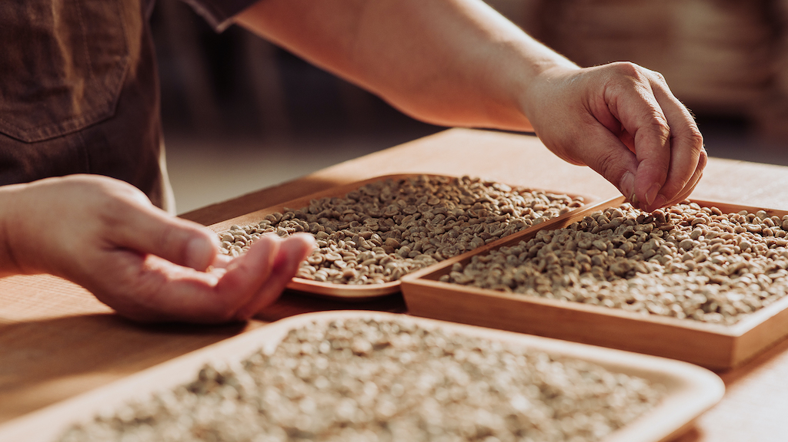
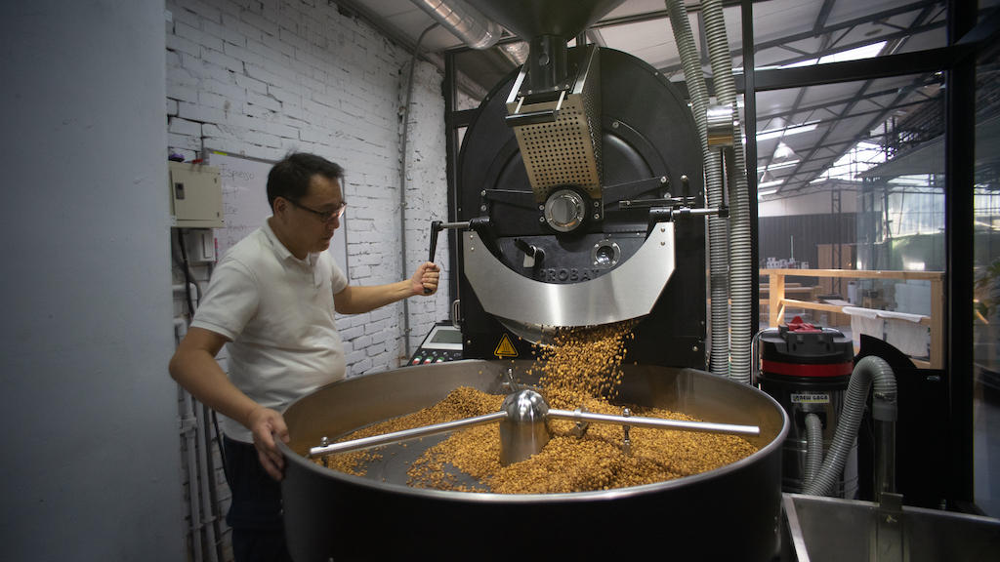
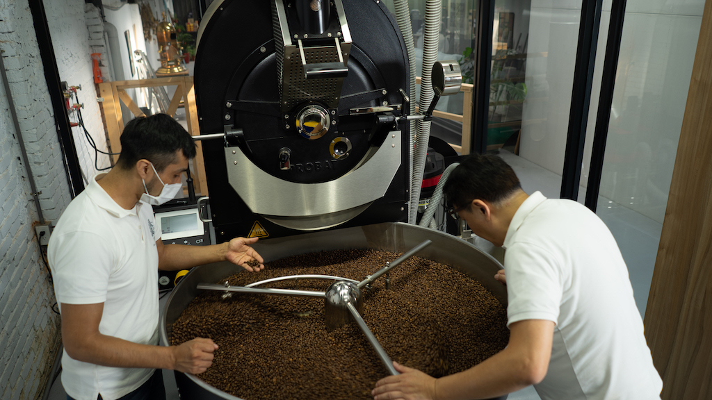
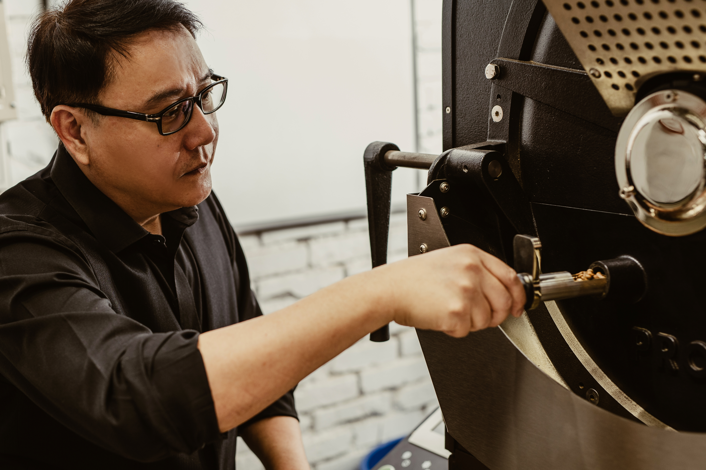
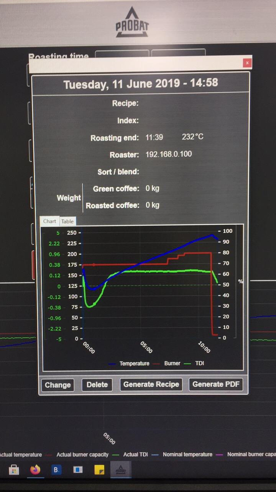
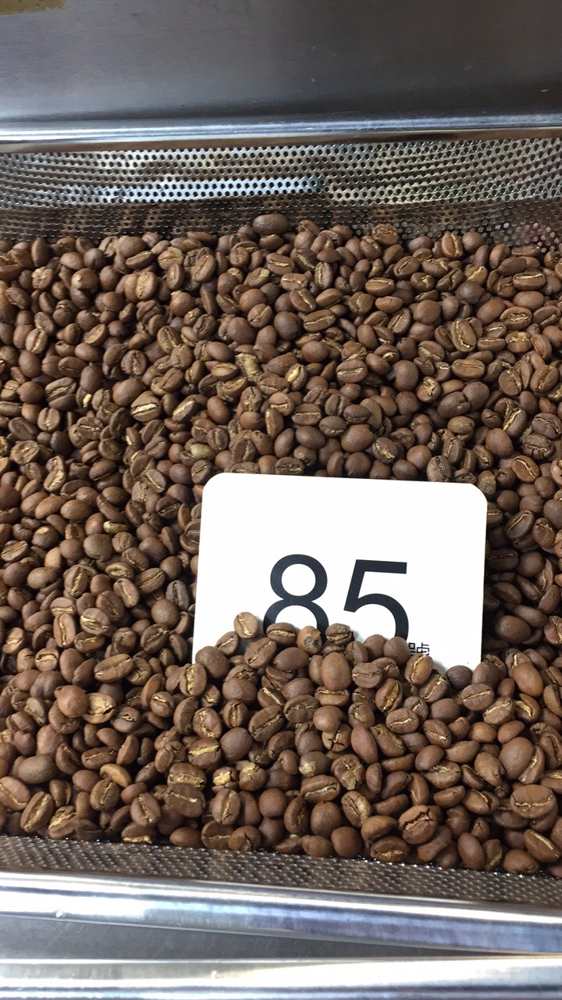
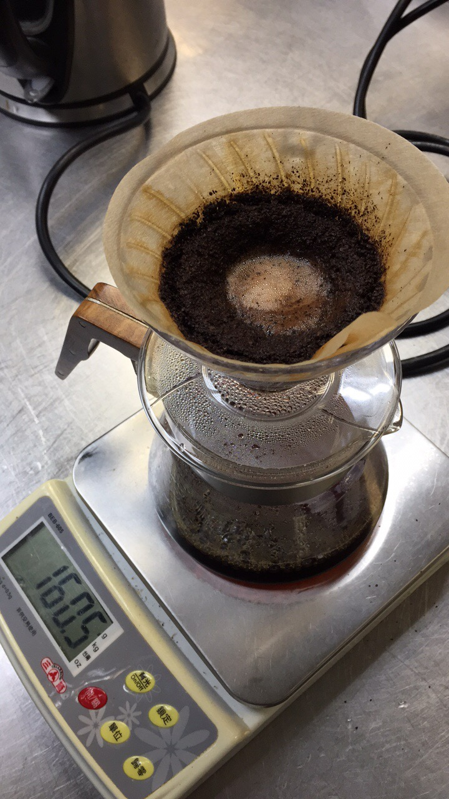

我們有30年的精品咖啡生產經驗，過程中的每一道流程都以最嚴格的標準把關，此外我們也具備大量生產的能力，每月咖啡產能達4.6噸以上。
烘豆過程影片。

生豆：瑕疵豆挑選，從生豆就嚴格把關每一顆咖啡豆的品質。

烘焙過程：二次烘焙讓咖啡豆成現出更美好的風味。

繼續撿豆：在烘焙過程中，不斷的排除瑕疵豆和營養不良的豆，為的就是要讓我們的咖啡豆顆顆都能程現肥美飽滿。

烘焙度檢測：因每一批的咖啡豆都會略維不同，所以不時的確認烘豆機內的咖啡豆是否已接近完美狀態。



新型的高階烘豆機能記錄每一次的烘焙溫度、濕度等參數，做為下一次烘焙時的輔佐參考，數據更能做為每一批咖啡豆的風味比較和修正。